The first-ever iGEM team from IIT Roorkee!
We are a team of Undergraduates, Masters and PhDs who share a vision
of impacting the globe through Synthetic Biology. We have students
aboard from various disciplines, contributing to solving one of the
major problems the healthcare industry faces today. iGEM provides us
with a great platform which enables us to execute things beyond
capabilities at the global level.
Meet our passionate Team Mates
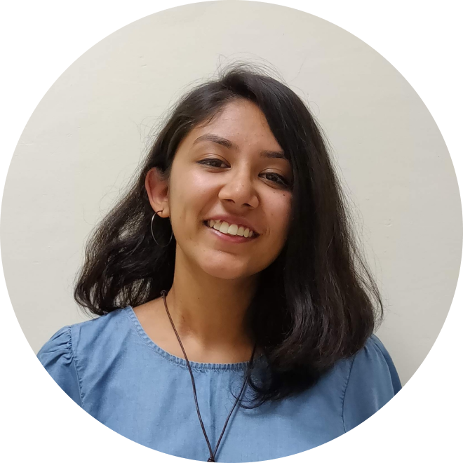
Sanjeevani Marcha
TEAM LEADER
Sanjeevani
Marcha
I wonder what might be happening in the parallel universe where I didn’t go high over heels talking about iGEM, building it brick by brick, and burning the midnight lamp with a bunch of 12 - 15 juniors in an eerie classroom of the biotechnology department. Well, I’ll be sulking at the lack of purpose and dealing with the existential crisis of a benign final year student.
Hello everyone! I am Sanjeevani Marcha, who engineered team IIT Roorkee before she could get her hands on tweaking DNA...
Read more
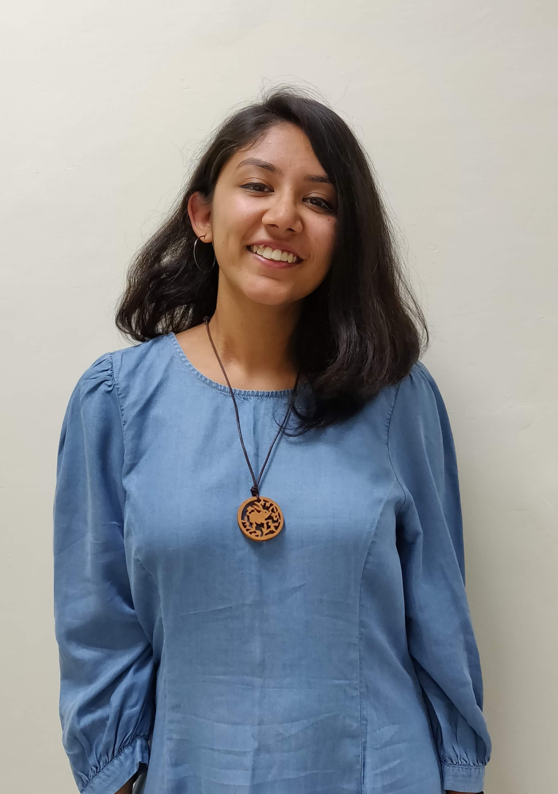
and playing with genes & bacteria. As a Team Leader, I am usually on the run casting my energy and passion on my team members and pushing them to achieve our common dream of first successful Gold Medal iGEM project.
Having led the journalism division at the student media body of my institute, I have a penchant for stories, and I strongly believe that the most important part of iGEM is the story you tell. I drive my team on one notion, “Great stories make great projects and win laurels!”
If not working, I am seen chattering. I am proud of my diverse music taste, but not so proud of my eclectic desires. (Haha don’t worry, I’ll find my niche soon, hopefully.)
Read less
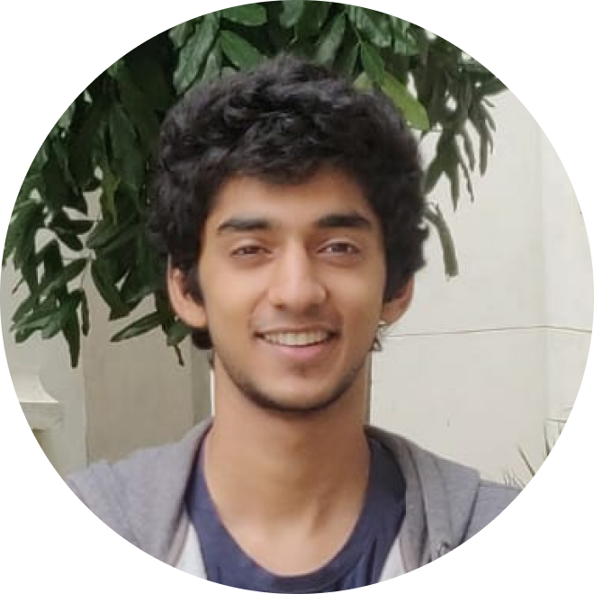
Siddharth
Suhas Fitwe
WET LAB
Siddharth
Suhas Fitwe
I’m Siddharth, a 2nd-year Biotechnology undergraduate and a sci-tech enthusiast with a deep love for biology. I believe for life to have meaning, your actions should have an impact on the world in the future. Bringing the bleeding edge of science to application is key for a sustainable existence of humanity and the environment. iGEM is one of the biggest open-science communities that is devoted to bringing out solutions...
Read more
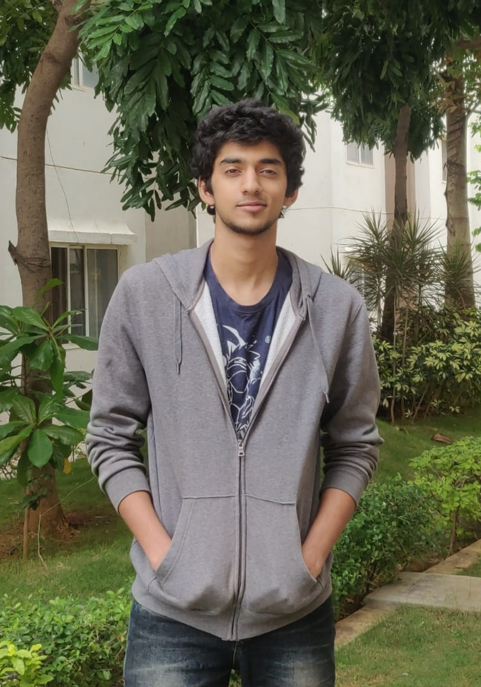
for world problems and that really excites me. Working as a part of the Research and Wet Lab Team, I spend a lot of time doing research, designing experiments, writing proposals, and thinking of ways to improve and implement the project. Apart from my life inside the lab, I like to travel (spontaneous trips are the best), go on hikes, grow mushrooms, watch movies and play basketball. PS:There will be dragons (again)!
Read less
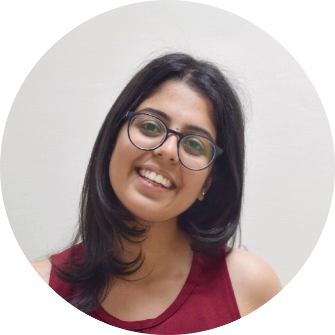
Muskaan Bhambri
DRY LAB
Muskaan
Bhambri
I am in my final year of a bachelor’s degree in Biotechnology. I have always been fascinated by seeing how living systems work and how even the minutest of changes at the genetic level, can have revolutionary impacts. I embarked on my iGEM journey because what else could be a bigger learning experience than starting things from scratch? iGEM is not just restricted to biology, it’s an amalgamation of various components and biology happens to be only one of them. What excites me the most...
Read more
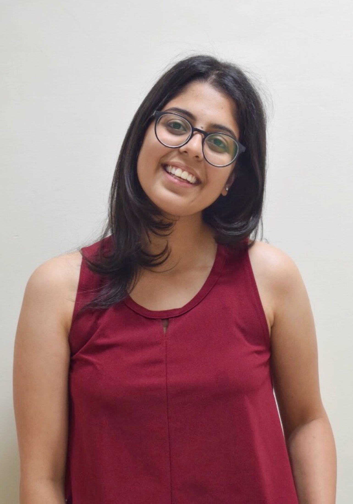
about it is that it not just helps you to grow as a researcher but also prepares you to face the challenges beyond the doors of the lab. On the whole, I believe it broadens your perspective, challenges it in many ways, and gives you an interdisciplinary lens to solve various problems. Following my words, I append to the bioinformatics aspect of the project.
Read less
Pradum
Kumar
I am Pradum, a third-year undergraduate student currently pursuing biotechnology. Being an integral part of the dry lab and Research & Development team, I have roles in integrating the bioinformatics aspects and lead through the development of the project.
As an iGEMer, I believe we are the future of synthetic biology and have the competence to solve every problem for humankind. I love how different cellular systems work so correctly and efficiently on such a ...
Read more
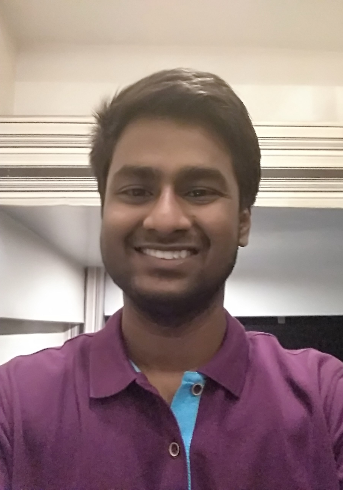
micro-level. The working of the brain with billions of neurons is what excites me the most and inspires me to give my best shot possible to study it.
It's a pleasure working in the team and exploring the unexplored.
Read less
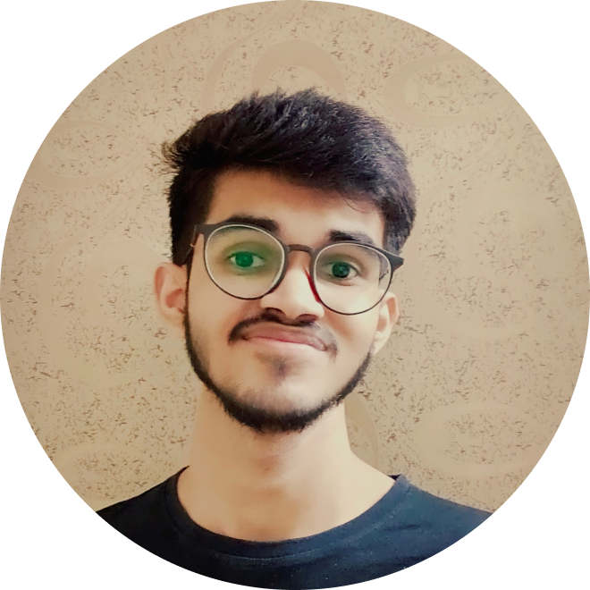
Kushagra Rustagi
DRY LAB
Kushagra
Rustagi
I am Kushagra, a 3rd-year undergrad at the department of biotechnology.
I always work towards honing my skills and try to give my bit to society. I think being part of the iGem team I get to cultivate a lot of my interests from how things work on the molecular level to how it affects the society we live in. With that thing in mind, my main work focuses on the development of the software for the project. Other than that I try to invest my dry lab skills in mathematical modeling as well.
Read more

In my opinion, iGEM is all about modifying and creating life forms according to our needs. What I expect of it is no less.
Read less
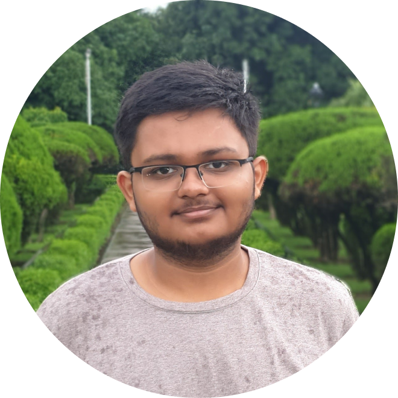
Kartikey Kansal
HUMAN PRACTICES
WET LAB
Kartikey
Kansal
I am Kartikey, a biotech sophomore. I never thought playing with organisms could ever be so amusing until I found Synthetic Biology. Shhh, I want to code a human in the future. Sci-fi much? Well, it’s possible and I have already got the tools in my hand!
I joined iGEM because it makes research interesting. Yes, we can take that but also maybe an institute sponsored Boston Trip! Jokes apart, iGEM has blessed me with a community of enthusiastic researchers, analysts, designers, and people from...
Read more
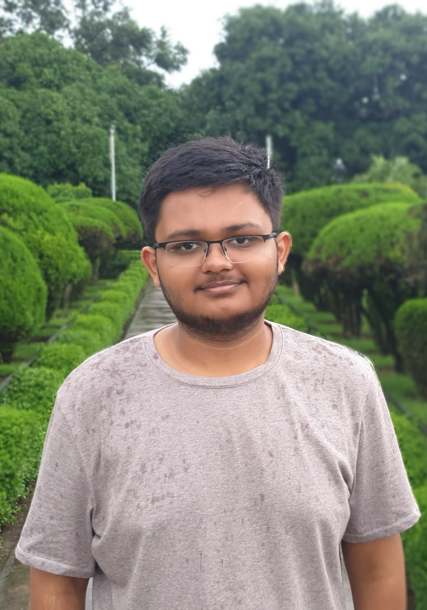
different walks of life making the opportunity to learn - endless. My role, as a member of the Research and Human Practices team, allows me to share our team’s vision and beliefs with intellects and common people.
It is thus a great place to embark on my journey!
Peace.
Read less
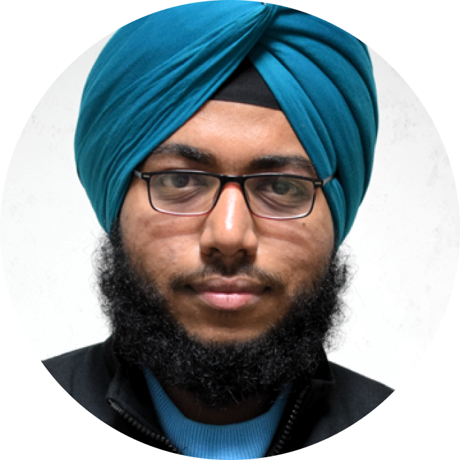
Harikirat Singh Arora
DRY LAB
Harkirat
Arora
I am Harkirat, a final-year undergraduate in Chemical Engineering. I am handling machine learning and computational part of our iGEM project, and believe machine learning has a lot to do with synthetic biology.
'Our world is built on biology and once we begin to understand it, it then becomes a technology' is what I've always believed in. Having said that, I am fascinated by recent advancements in generating synthetic sequences with desired properties and ...
Read more

editing existing genomes using machine learning and motivated by the dream to develop such algorithms one day by myself. iGEM is a platform that'll help me curate ideas and live my dream. I am a football fan, and one of those majority of people who love both Real Madrid and CR7, but right now eagerly waiting for Liverpool to lift the PL trophy. I also love to give input in uplifting the society as a leading member of the NSS team of the Institute.
Read less
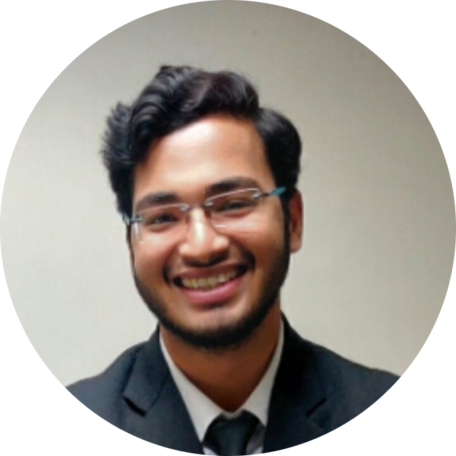
Yash Aggarwal
HUMAN PRACTICES
Yash
Aggarwal
I’m in my Third year of bachelor’s in Biotechnology. I have always been fascinated by biology and the sole reason for me to take up this course for my grad school is the same that I’ll be able to learn and explore biology irrespective of my engineering background.
When it comes to the fascination of building things from scratch, what could be more exciting and intriguing than making up an organism? iGEM is a suitable platform to go ahead and unblock those curiosities. From ...
Read more
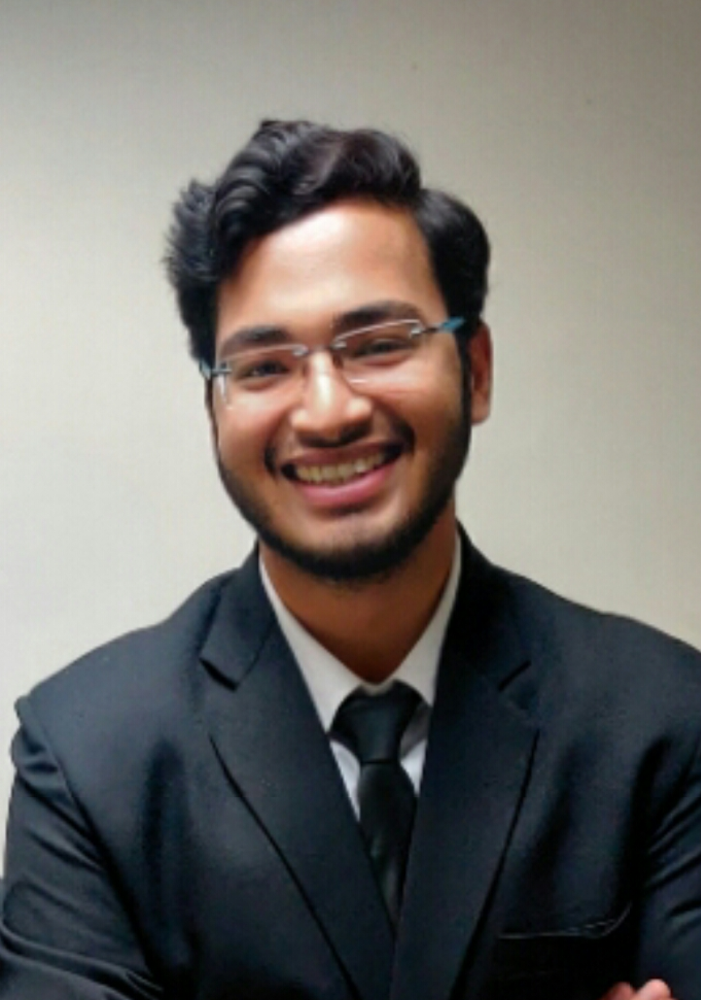
content to HP and to research and lab work, I’m all for it. I have always believed that there’s a lot to learn once we step out of the doors of the lab, let alone inside it. On the whole, the perspective and experience we gain to solve problems with an interdisciplinary viewpoint should be our ultimate target.
Read less
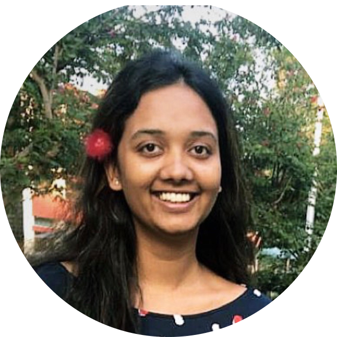
Tishee Natani
HUMAN PRACTICES
Tishee
Natani
I'm Tishee, a biotechnology undergraduate. As a part of the Human Practices team, I work in formulating the content and spreading the exciting idea of playing with molecules and organisms! Taking the project to the community and explaining the urgency of the situation is a major part of my task.
Frankly, I danced after giving my 10th biology paper, thinking I'd never have to deal with it again. But it made me realize how exciting working with organisms is! And I
Read more

expect to have a nice exposure to team culture whilst exploring my interest in the core. For me, building a network and the idea of how to build yourself up is what iGEM is all about. Working for collaborations and talking to the stakeholders for their take on our project is something that helps in the above idea of networking.
Read less
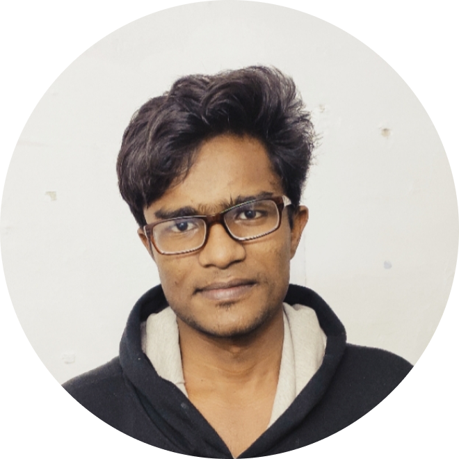
Nitish Verma
HUMAN PRACTICES
Nitish
Verma
Hello everyone! I am Nitish, a third-year undergraduate student. I contribute to the Human Practices vertical in the iGEM team. Engaging with different communities to have a better perspective of life sciences, technological advances, and its effect on the human race comes under my division. Bringing in the collaborations is also a major aspect I’m figuring out by making the best of my outspoken skills.
I believe that where science exists, a question mark always stays posing a parallel
Read more
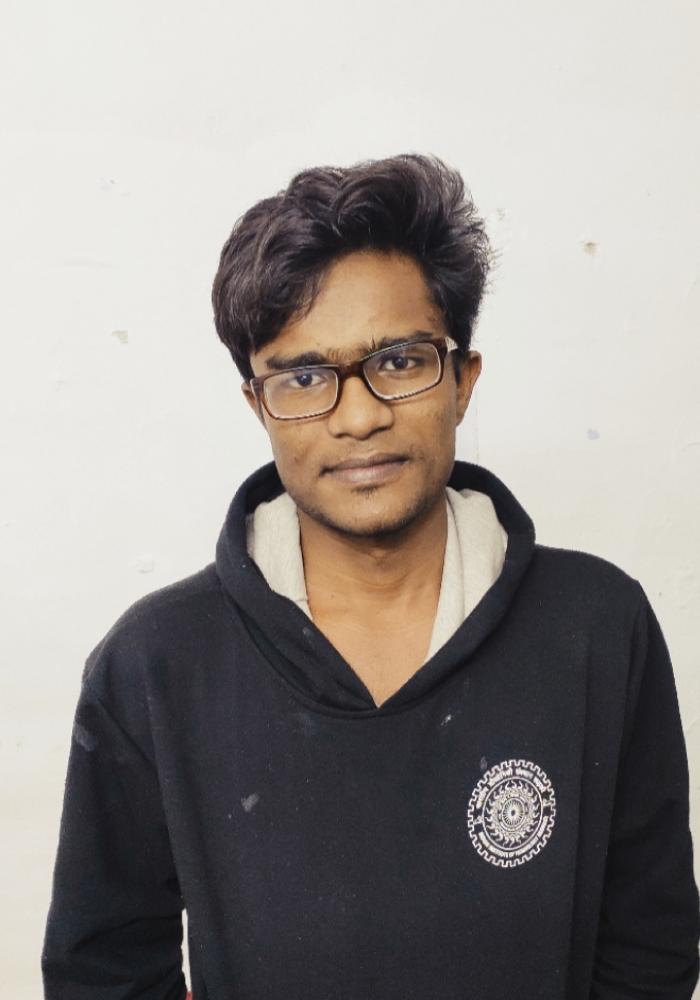
universe and paranormal activities a question of existence. This thrill of knowing any and everything has been my inspiration to be a part of iGEM. This platform either answers your curiosities or makes it even more interesting to explore.
I am not at all filmy or dramatic and getting straight to the point always works. My dream and passion to achieve the highest peak in the world keep me going.
Read less
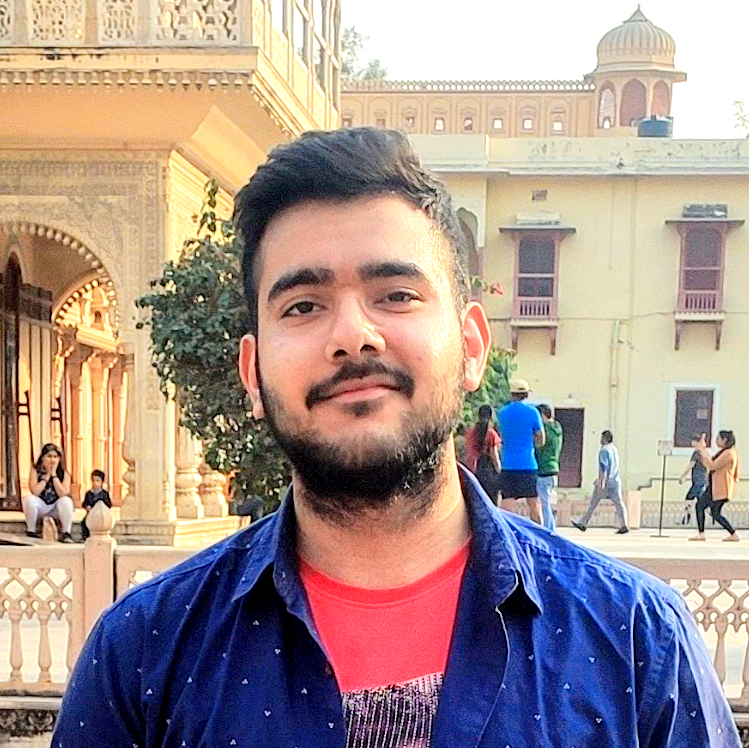
Mihir Sachdeva
DEVELOPER
Mihir
Sachdeva
Hey! I'm Mihir Sachdeva, and I like everything about science and technology. I can spend a whole day watching random science/math videos on YouTube and I'm always curious about "How Stuff Works" ;)
A prototypical nerd since childhood (the hardcore ones, those who like Star Wars xD) you'd find me in my room, reading, aimlessly scrolling though social media, or learning something new and cool more often than you'd find me out of my room.
I'm a second-year Chemical Engineering student at IIT Roorkee...
Read more
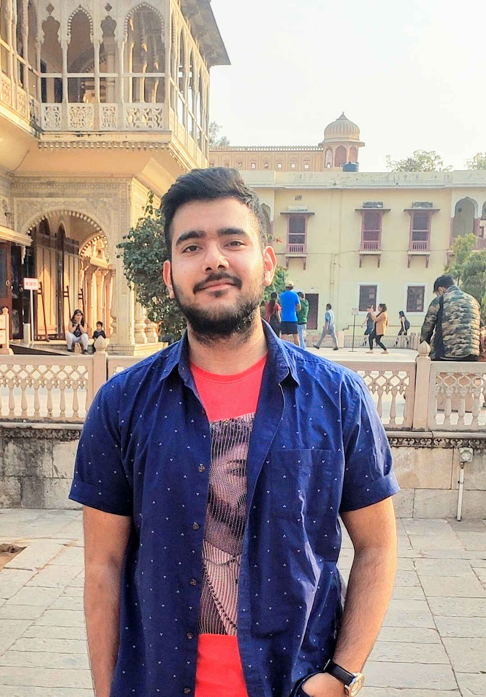
I am a budding software developer, and a huge fan of the open source community.
I develop our team's wiki and software. I always strive to write quality and efficient code, and automate tasks as much as possible. Since this is our Institute's first ever iGEM team, I am really looking forward to developing efficient and reliable programs for our wiki and software, which would build a foundation for our future teams. :)
Read less
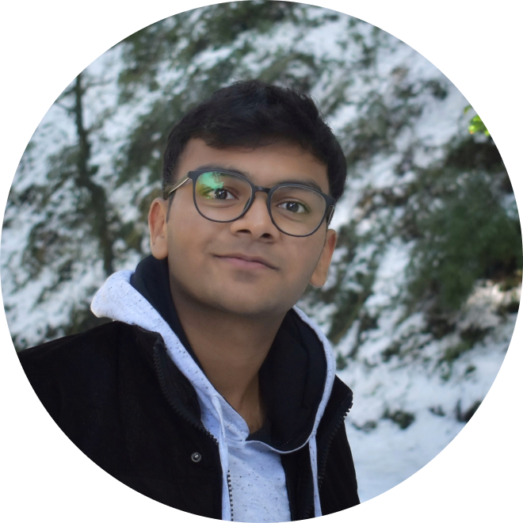
Lakshya Jain
DESIGNER
Lakshya
Jain
I’m Lakshya Jain, currently pursuing biotechnology and I’m a tech enthusiast. My responsibility in the team includes designing of various social media posts and the wiki page.
My motivation to work myself off is the thought of hows and whys of the future. I search for the possibilities to bring fiction into existence and iGEM makes you explore the different eras with the help of synthetic biology that might get me some answers.
I’ve always believed that...
Read more

'Everything starts from a dream.' So, I want to dive into the biology of iGEM to gain more knowledge of the things around the globe and give my best shot at learning.
Read less
Siddharth
Suhas Fitwe
I’m Siddharth, a 2nd-year Biotechnology undergraduate and a sci-tech enthusiast with a deep love for biology. I believe for life to have meaning, your actions should have an impact on the world in the future. Bringing the bleeding edge of science to application is key for a sustainable existence of humanity and the environment. iGEM is one of the biggest open-science communities that is devoted to bringing out solutions...
Read more
for world problems and that really excites me. Working as a part of the Research and Wet Lab Team, I spend a lot of time doing research, designing experiments, writing proposals, and thinking of ways to improve and implement the project. Apart from my life inside the lab, I like to travel (spontaneous trips are the best), go on hikes, grow mushrooms, watch movies and play basketball. PS:There will be dragons (again)!
Read less
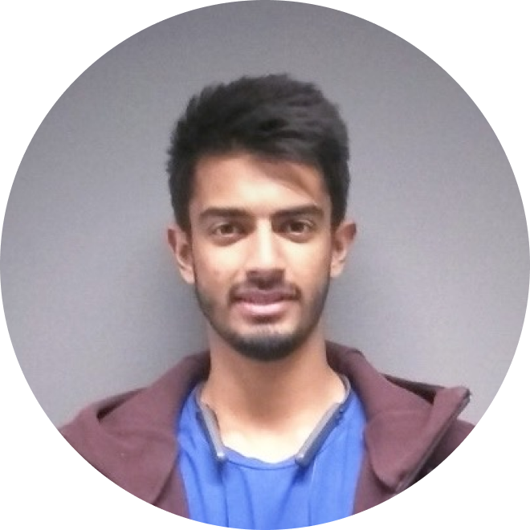
Kanishk Sugotra
DESIGNER
Kanishk
Sugotra
This is Kanishk, a second-year GT undergraduate student. I work in the design team with the sole purpose of giving my best to generate posters, templates, and the website as an asset to the team. Following the step-by-step approach to overcoming the most comprehensive challenges is kinda my thing. I believe it not only helps us solve the problems but incurs a curiosity to find new working methods and solutions.This is the reason why I chose iGEM to consecrate my skills and learn out-of-the-box things.
Read more
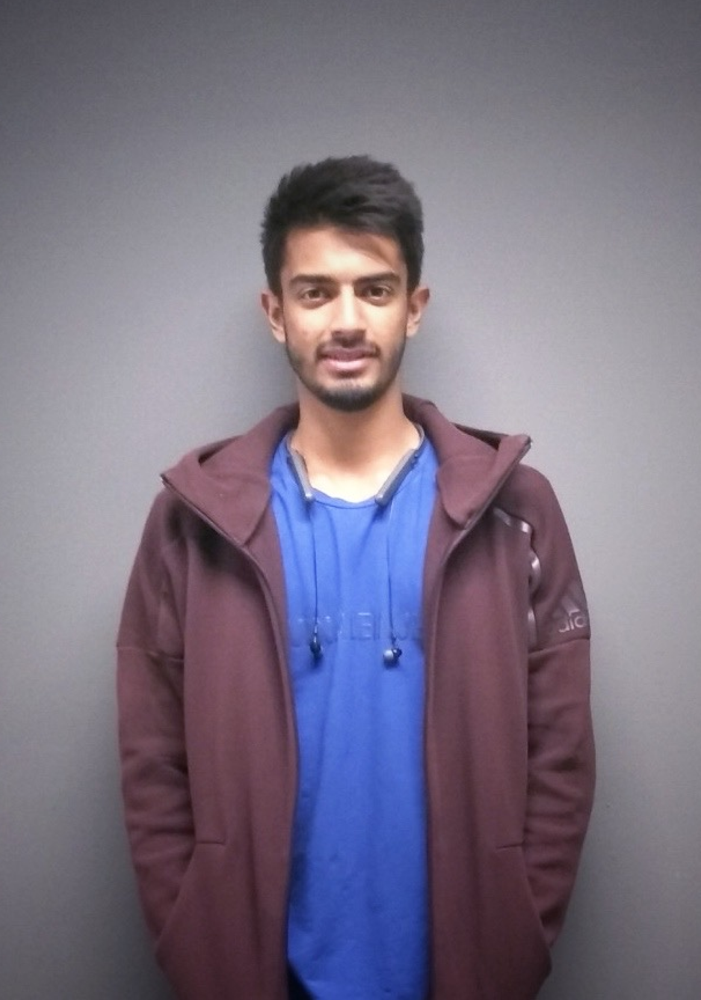
Being a fresher in the design field makes me more inclined towards sharing my ideas with the outside world and brainstorming to be a better version of myself. I thrive towards the completion of our journey to success.
Read less
Advisors

Prof. Naveen
K. Navani
FACULTY ADVISOR
Prof. Naveen
K. Navani
Naveen K Navani is a professor at Department of Biotechnology and joint faculty in Centre of Nanotechnology at IIT Roorkee. Prof. Navani has been working in the area of natural antimicrobial GRAS compounds, antimicrobial peptides, nanobiotics, probiotics and development of biosensors using both in-vitro and in-vivo methods. He teaches Nanobiotechnology, Diagnostics, Microbial Genetics, Microbiology and Genetic Engineering to Undergraduate and Postgraduate students.
Read more
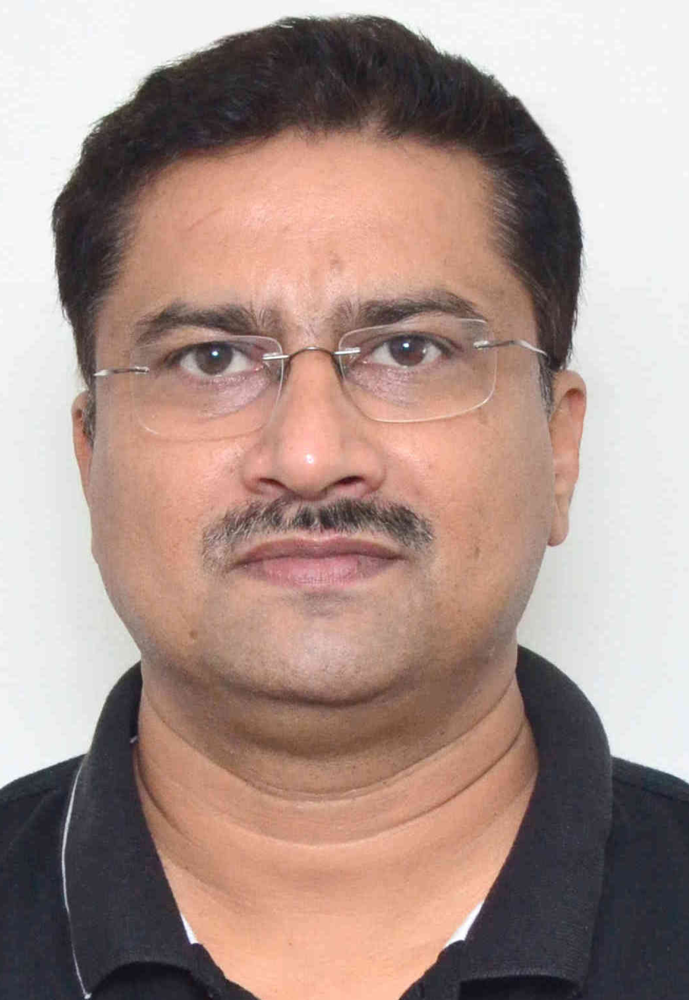
He is associated with the iGEM team as a faculty advisor. He loves to work with young and budding researchers and is happy to share his synthetic biology and nanobiotechnology experience for the iGEM project on Pyomancer.
Read less
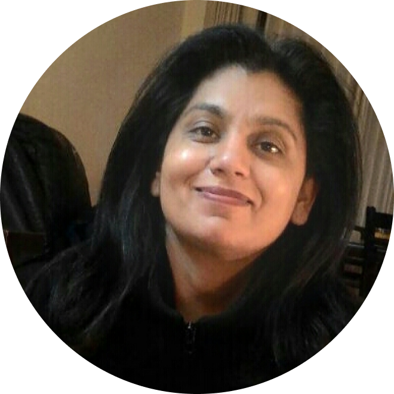
Prof. Ranjana Pathania
PRINCIPAL INVESTIGATOR
Prof. Ranjana
Pathania
Ranjana Pathania works in the area of antibacterial discovery and bacterial pathogenesis. She is a Professor in the department of Biotechnology and a joint faculty in Centre of Excellence in Disaster Management and Mitigation at IIT Roorkee. Her research group explores various aspects of bacterial pathogenesis such as the role of small RNA in Acinetobacter baumannii pathogenesis, antibacterial drug discovery and multiple drug resistance in bacteria. She also teaches various courses such as ..
Read more
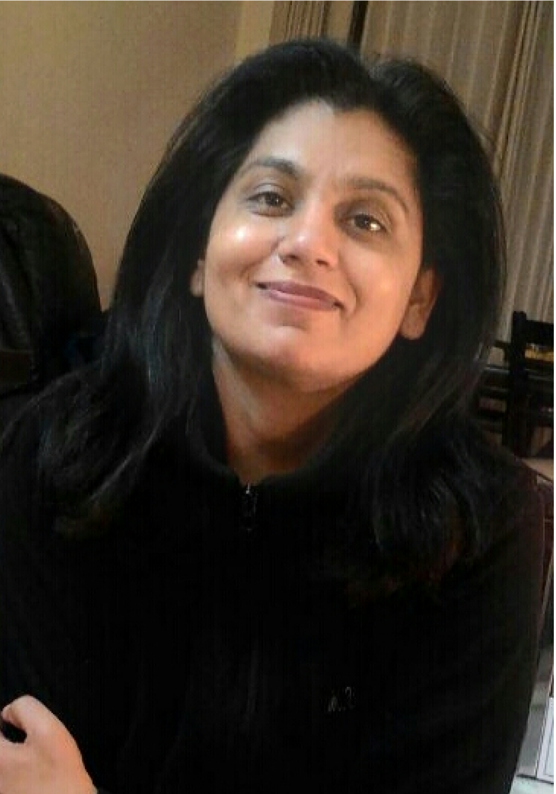
Drug Discovery, Chemical Genetics, Microbiology and Biological Disasters and Mitigation to Undergraduate and Postgraduate students at IIT Roorkee.
Acinetobacter baumannii is a top priority pathogen that has developed resistance to almost all antibiotics available in the clinic. There is an urgent need to develop therapeutic strategies against this recalcitrant pathogen. She is pleased to be associated as the principal investigator with the brilliant group of young minds of IIT Roorkee who are involved in the iGEM project “Pyomancer” that hopes to develop a chimeric pyocin against A. baumannii.
Read less
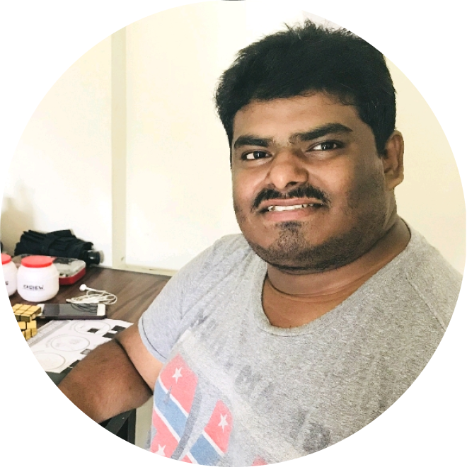
Dr. Siva R. Uppalapati
POST DOC
Dr. Siva
R. Uppalapati
Since their serendipitous discovery in the 1940s, antibiotics were considered ‘miracle drugs’ to cure, until then, irremediable bacterial infections. However, irrational misuse of similar life-saving drugs drove rapid emergence and wide transmission of resistance among bacteria. Multidrug and carbapenem-resistant Acinetobacter baumannii is a top priority lethal pathogen, where WHO recommends there is a dire necessity to develop new antibiotics. While, as a postdoc in Pathania lab at IIT Roorkee, I...
Read more
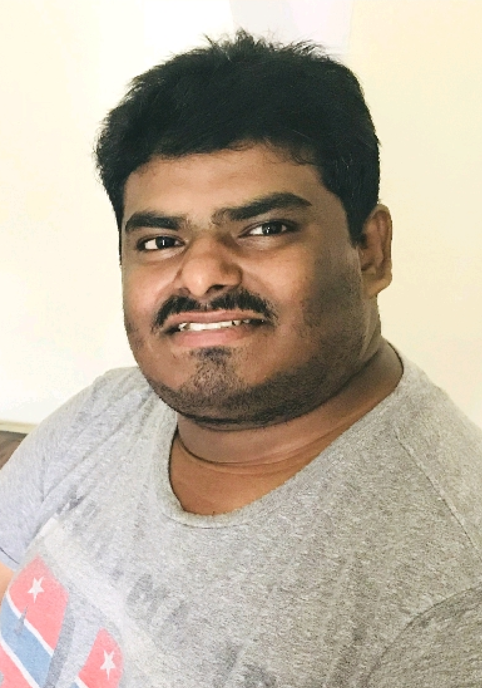
have been studying the underlying mechanisms that control the antibiotic tolerance in A. baumannii, and the IIT Roorkee iGEM team’s approach to tackling this pathogen has, in fact, fascinated me for its elegance and innovativeness. I could not think of a much better group of young researchers with impressionable minds to handle this project.
Read less
Somok
Bhowmik
I'm a senior research fellow and doing my research under the supervision of Prof. Ranjana Pathania at the Department of Biotechnology, IIT Roorkee. For the past four years, I've been studying several defense mechanisms adapted by Acinetobacter baumannii to escape from host immunity.
By working with the iGEM group, I learned about a different strategy to fight against antibiotic resistance, which I didn't know before. This study is really exciting for me.
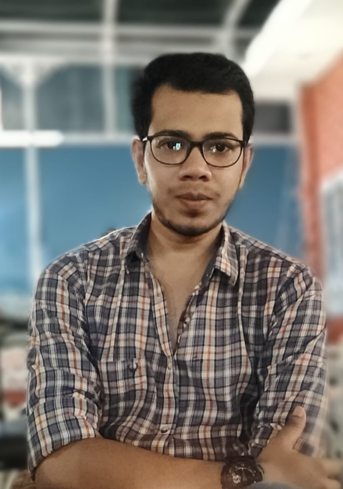
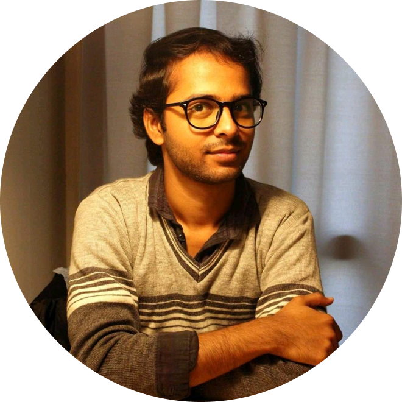
Darshak Bhatt
PhD
iGEM MENTOR
Darshak
Bhatt
I am a PhD student at the University of Groningen and University of Sao Paulo. My research interest lies in studying pathogens and/or tumor-resistance to biotherapies and trying to understand underlying mechanisms.
This summer I joined the IIT Roorkee team as an advisor and we look forward to an exciting iGEM project from this new team. iGEM is an exciting culture of student led research and science, and my role this year is to help the team realise their ideas and have a fun time doing iGEM.
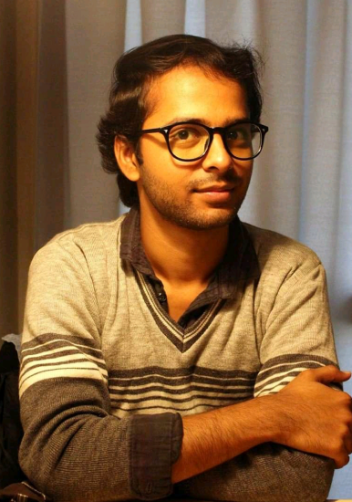
Team Poster
The term 'Team Spirit' is a literal one, because when we connect to the spirit in ourselves & those we work with, we truly become a team.
Each member of team iGEM IIT Roorkee has unique potential in himself/herself, and that potential had rightly been worked up in the project development. The dedication, enthusiasm, and contribution towards the project truly show the spirit of iGEM 2020.
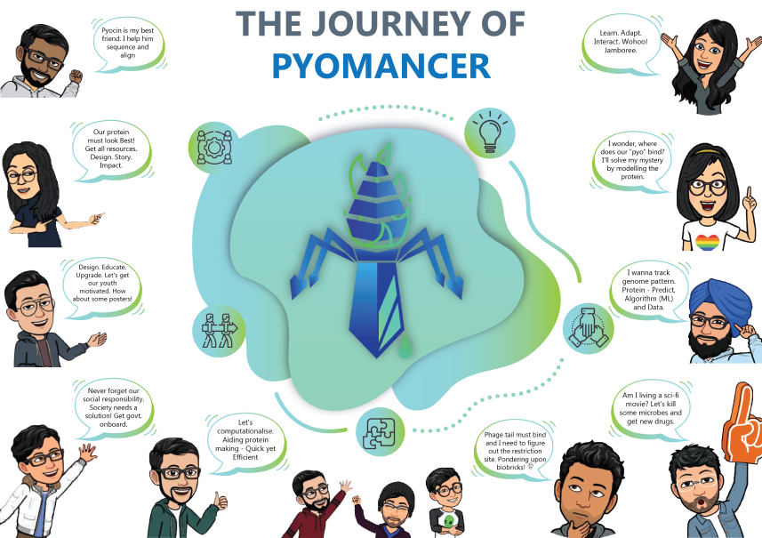